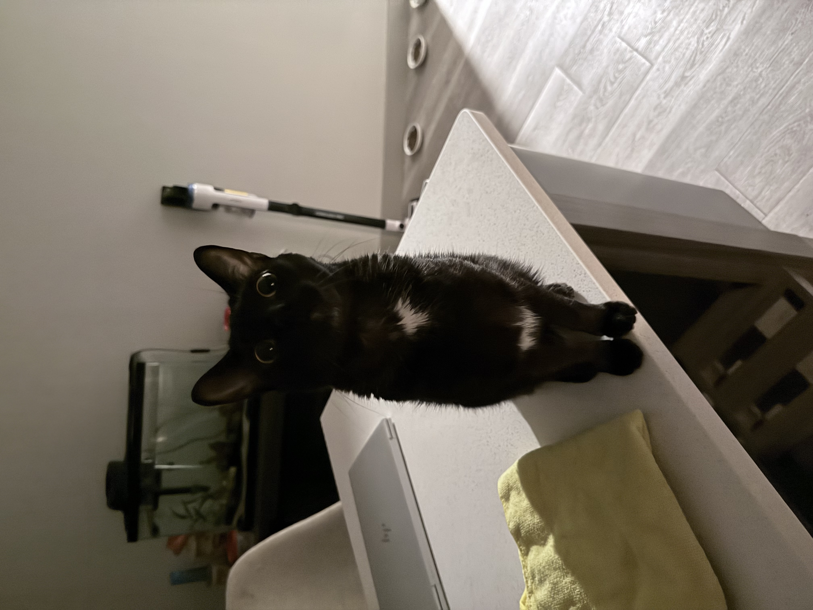
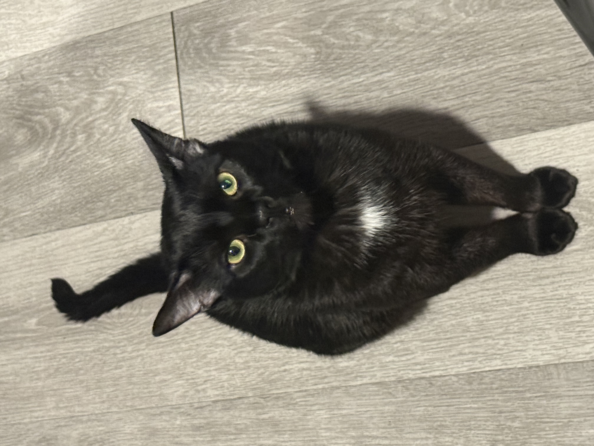

My name is Jose Galvan I am a 4th year Biology major at the University of California Riverside. I have a general enthusiasm towards anything biology, am particularly intersted in cellular biology. In my free time I like to cook, garden, learn new things, and go outside. I have recently got into watching more television. My go to shows right now are The Good Place, Smiling Friends (Me was born this way), American Horror Stories, and anything else that would flat iron the wrinkles in my brain. I currently work at a restraunt and am originally from Fontana California, where the most interesting things to do are to leave to another city to find something interesting to do. I have traveled to 6 differnt US states and 3 countries, and wish to expand upon that number. I am a very silly person and try to make everything into a little jokey joke. Like heres a good one. What does a programmer wear? Whatever is in the dress-code. I know I know im hilarious. Well that is a little about me, and depedning on who is reading this, thats probably more than you wanted to know. Goodbye now! *Gets beamed up by a flying saucer and outro music begins playing.